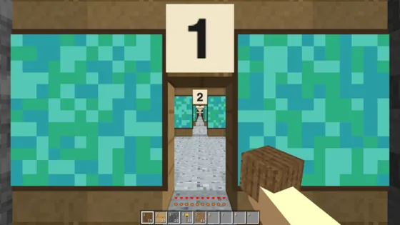
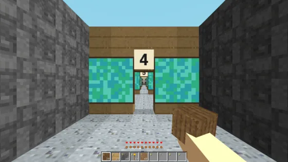
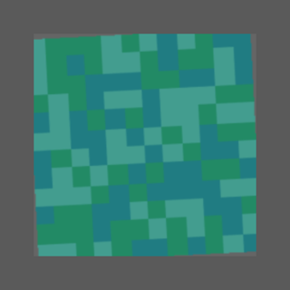
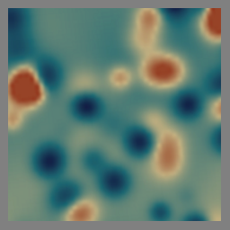
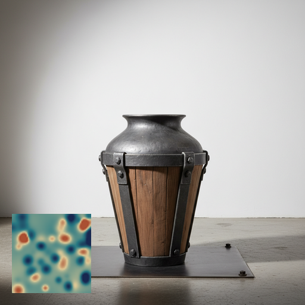
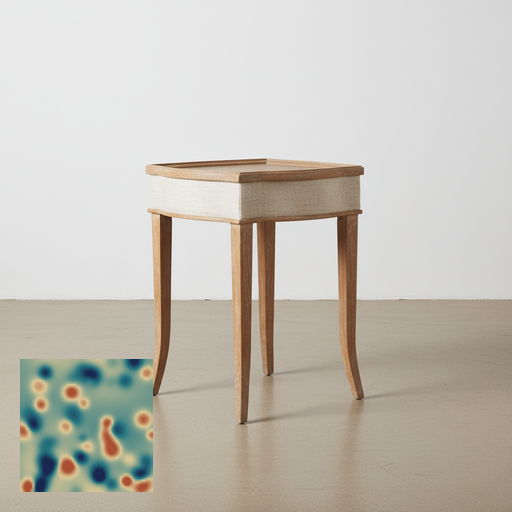
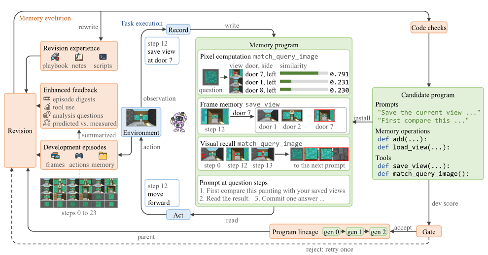

What should an agent remember before it knows the question?
In MC Gallery, the only instruction is to reach the gold wall. The agent passes 16 similar paintings along the way. At the exit, it sees one from a new angle. Can it use what it saved to recall the door and the side?
On the walk


At the exit

Where did this painting hang?
Door 7, leftIf the painting never appeared on the walk, the answer is “not seen.”
Six environments
Deferred queries
Goal known from the start
Try a decision from a real episode
Why Do Existing Memory Designs Fall Short with Deferred Queries?
| Memory design | MC Gallery | Poster Maze | DMV-Hard |
|---|---|---|---|
| Basic image tools | 15.0 | 18.8 | 13.8 |
| Hand-designed visual memory Archive only | 20.0 | 16.3 | 22.1 |
| Evolved text memory | 23.8 | 16.3 | 42.1 |
| Hand-designed visual memory Archive + matcher | 18.8 | 16.3 | 80.8 |
| One-shot program | 13.8 | 20.0 | 28.8 |

AutoMem’s notes

rust-orange, cream and navy blurred blobs

rust-orange and dark navy blob accents
Evolved text memory
Its descriptions of one pattern often fit several others, so the stored notes cannot distinguish the queried item.
My notes led me to the side table. The swatch came from the vase.
Hand-designed visual memory
The program lacks operations that associate the match with a location and determine whether the queried picture was seen at all.
I found the painting in the frame. Which door was it beside, and on which side?
One-shot program
One gallery program records the order of the doors passed, whereas the later questions ask where each painting hung.
I wrote down the doors in order. In ten walks, I saved just one frame.
The EvoViM framework
The agent starts with basic image tools and runs two development episodes. The same frozen model inspects the episodes, edits its program, and updates the playbook, notes and scripts it uses for later revisions.

Memory evolution in MC Gallery
Across two development episodes, the agent answered 4 of 16 questions with notes, 13 with painting crops and 16 with doorway views.
Main results
Across the three models, EvoViM outscored AutoMem by 31.3 to 47.6 percentage points on the six-task held-out average.
Scores across generations
By generation 2, 13 of the 18 EvoViM programs had made at least 90% of their final gain over the starting program.
Revision support ablation
We removed enhanced feedback and inherited revision experience together in the Claude Haiku 5.5 runs.
MC Gallery
Development runs at ≥75% by generation 2- Full EvoViM
- 3 of 3
- Without revision support
- 0 of 3
MC Gallery
Mean held-out score across three runs- Full EvoViM
- 88.3%
- Without revision support
- 60.0%
DMV-Hard
Final held-out score, one run per setting- Full EvoViM
- 77.1%
- Without revision support
- 82.9%
Evolved visual tools
Mechanisms added by evolution
EvoViM most often added frame parsing and image memory. AutoMem most often added text notes. A final program can add several mechanisms in one group.
- Image memory
- Frame parsing
- Text notes
- Workflow
Mechanisms added across 18 final programs per method
Programs that gained each function
Each function is counted once per program, across 18 EvoViM and 18 AutoMem programs.
Image memory
- Pixel matching
- Visual store
- Visual recall
Frame parsing
- Frame parsing
- Spatial index
- Decision support
Text notes
- Text ledger
Workflow
- Workflow control
A tool from each task
- Visual matching
- Card Matching compares exposed card faces. DMV-Hard searches saved pages for the corner pattern in a product photo.
- Spatial recall
- MC Gallery locates a painting beside a numbered door. Poster Maze links a poster to a cell and wall.
With its evolved wall map, Qwen3.8-27B saw 4.3 posters clearly per episode, up from 1.5 with the starting program (10 held-out episodes).
- Sequential decision-making
- Tetris reads the board and plans a drop. Pac-Man updates its pellet map and finds the first move on a route.
Try EvoViM.
Run Card Matching offline with Python 3.10+ on macOS or Linux.
git clone https://github.com/Lewis-Xinyu/EvoViM.git
cd EvoViM
python3 -m venv .venv
. .venv/bin/activate
python -m pip install .
evovim demo --cards